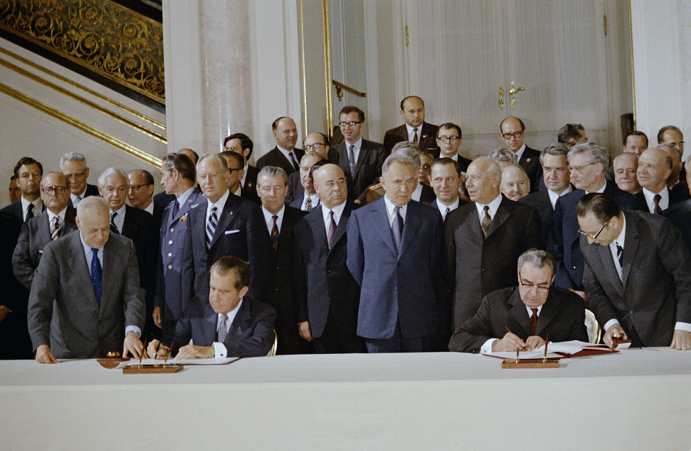

Directions: Work through the five stations in order. The stations run in the order of the record, from the first arms agreement of détente to the defense proposal of 1983. Four stations print documents word for word, with cuts marked. One station is a labeled summary, prepared for this lesson and marked as a summary on its face. At each station, answer both questions. At the end, sort the five records by direction and judge the argument about why détente ended.
Source: Interim Agreement Between the United States of America and the Union of Soviet Socialist Republics on Certain Measures with Respect to the Limitation of Strategic Offensive Arms, signed at Moscow, May 26, 1972. Text as held by the Department of State, Office of the Historian, in Foreign Relations of the United States, 1969 to 1976, volume 32. The articles below are printed word for word. Articles II, III, and V stand between Article I and Article IV and are not printed here.

Article I. The Parties undertake not to start construction of additional fixed land-based intercontinental ballistic missile (ICBM) launchers after July 1, 1972.
[...]
Article IV. Subject to the provisions of this Interim Agreement, modernization and replacement of strategic offensive ballistic missiles and launchers covered by this Interim Agreement may be undertaken.
What exactly does Article I freeze, and from what date? Name the weapon and the kind of launcher in your answer.
What does Article IV still allow each side to do? Use that article to explain the charge, made by détente's critics, that the agreement limited less than it appeared to.
Source: Final Act of the Conference on Security and Co-operation in Europe, Helsinki, August 1, 1975, Principle VII. Text as held by the Organization for Security and Co-operation in Europe (OSCE). The passage below is printed word for word, with cuts marked. In Principle III of the same document, the participating states also declared Europe's frontiers inviolable.
The participating States will respect human rights and fundamental freedoms, including the freedom of thought, conscience, religion or belief, for all without distinction as to race, sex, language or religion.
They will promote and encourage the effective exercise of civil, political, economic, social, cultural and other rights and freedoms all of which derive from the inherent dignity of the human person and are essential for his free and full development.
[...]
They confirm the right of the individual to know and act upon his rights and duties in this field.
List the freedoms Principle VII names in its first sentence, and state the standard it sets for who holds them.
The last sentence confirms a right of the individual. State that right, and explain how a dissident living under a government that had signed this document could use it.
Source: Teaching summary prepared for this lesson from the record of the Soviet invasion of Afghanistan and the Carter administration's response, including the president's address of January 4, 1980 and his State of the Union address of January 23, 1980. This station is a summary, not a transcription.
In late December 1979, Soviet forces entered Afghanistan, a state on the Soviet Union's southern border whose Communist government was losing control of a rebellion. Soviet troops seized the capital, Kabul. The Afghan leader, Hafizullah Amin, was killed, and Babrak Karmal was installed in his place. The Soviet government stated that its forces had been invited and would stay only as long as they were needed. In the years that followed, the Soviet army fought a guerrilla war across the country and could not finish it.
President Jimmy Carter answered in January 1980. The United States embargoed grain sales to the Soviet Union, led a boycott of the Olympic Games to be held in Moscow that summer, and withdrew the SALT II treaty, signed by Carter and Brezhnev at Vienna in June 1979, from consideration by the Senate, where it was never ratified. On January 23, Carter declared that an attempt by any outside force to gain control of the Persian Gulf region would be regarded as an assault on the vital interests of the United States, and would be repelled by any means necessary, including military force.
Name what the Soviet Union did in Afghanistan, in the order the station gives it, and state the reason the Soviet government gave for its forces being there.
Name Carter's three direct answers, and then state what his January 23 declaration added that went beyond Afghanistan itself.
Source: Ronald Reagan, address to the Annual Meeting of the National Association of Evangelicals, Orlando, Florida, March 8, 1983, printed word for word from the audited TPSP bank record. Edition named in the bank record: Ronald Reagan, "Evil Empire Speech," March 8, 1983 (Wikisource). Cuts are marked in the text as the bank record marks them.
[...] Yes, let us pray for the salvation of all of those who live in that totalitarian darkness, pray they will discover the joy of knowing God. But until they do, let us be aware that while they preach the supremacy of the state, declare its omnipotence over individual man, and predict its eventual domination of all peoples on the Earth, they are the focus of evil in the modern world. [...]
So, I urge you to speak out against those who would place the United States in a position of military and moral inferiority. [...] in your discussions of the nuclear freeze proposals, I urge you to beware the temptation of pride, the temptation of blithely declaring yourselves above it all and label both sides equally at fault, to ignore the facts of history and the aggressive impulses of an evil empire, to simply call the arms race a giant misunderstanding and thereby remove yourself from the struggle between right and wrong and good and evil. [...]
I believe that communism is another sad, bizarre chapter in human history whose last pages even now are being written. [...]
Reagan was speaking against the nuclear freeze proposals. What is he accusing the freeze movement of doing, in the second passage? Answer from the text.
State the prediction Reagan makes in the last line, and describe how this speech's language about the Soviet Union differs from the language of the agreements at Stations 1 and 2.
Source: Ronald Reagan, Address to the Nation on Defense and National Security, March 23, 1983, printed word for word from the record held by the Ronald Reagan Presidential Library, as printed in the Public Papers of the Presidents. The second passage follows the first in the address after intervening paragraphs, and the join is marked.
I call upon the scientific community in our country, those who gave us nuclear weapons, to turn their great talents now to the cause of mankind and world peace, to give us the means of rendering these nuclear weapons impotent and obsolete.
[...] I am directing a comprehensive and intensive effort to define a long-term research and development program to begin to achieve our ultimate goal of eliminating the threat posed by strategic nuclear missiles.
What does Reagan ask the scientific community to make possible, in his own words? State the goal he gives for the research program in the second passage.
Deterrence, the policy this proposal challenged, held each side safe because an attack would bring a destroying answer. Explain why a working defense would change that bargain, and why Soviet leaders might read the proposal as a threat rather than as protection.
Sort the five records by direction. For each station, enter its direction, easing the contest or raising its pressure, and the evidence from the document that supports your sorting.
| Station | Direction | Evidence from the document |
|---|---|---|
| Station 1: SALT I, 1972 | ||
| Station 2: Helsinki, 1975 | ||
| Station 3: Afghanistan, 1979 to 1980 | ||
| Station 4: Evil empire, 1983 | ||
| Station 5: SDI, 1983 |
Close the file in a short paragraph. Did détente fail because it was tried, or because it was abandoned? Defend your verdict from the documents, using at least one station from each direction of your sorting, and name the station for each fact you use.
What exactly does Article I freeze, and from what date? Article I freezes construction of additional fixed land based intercontinental ballistic missile (ICBM) launchers. Each party undertakes not to start building more of them after July 1, 1972. The freeze covers launchers, the silos and submarine tubes missiles are fired from. It does not cover the missiles themselves, their warheads, or bombers.
What does Article IV still allow, and how does it support the critics' charge? Article IV allows modernization and replacement of the strategic offensive ballistic missiles and launchers the agreement covers. Each side could therefore build newer and more capable missiles for the launchers it already held, including missiles carrying several warheads. The critics' charge follows directly from the text. An agreement that froze the number of launchers while expressly permitting better weapons inside them limited the count of one part of the arsenal and left its power free to grow.
List the freedoms Principle VII names, and state the standard for who holds them. The principle names human rights and fundamental freedoms, including the freedom of thought, conscience, religion or belief. The standard is universality. The rights are held by all, without distinction as to race, sex, language or religion, a standard stated in the document itself and signed by governments that denied several of the freedoms in practice.
State the individual's right in the last sentence, and explain how a dissident could use it. The document confirms the right of the individual to know and act upon his rights and duties in this field. A dissident could use it by quoting his own government's signature. Watch groups in Moscow and Prague did exactly that, recording arrests and trials against the pledge and sending the record abroad. The pledge gave the dissident a text his government had already accepted.
What did the Soviet Union do, and what reason did it give? Soviet forces entered Afghanistan in late December 1979, seized Kabul, killed the Afghan leader Hafizullah Amin, and installed Babrak Karmal in his place. The Soviet government stated that its forces had been invited and would stay only as long as they were needed. The army then fought a guerrilla war across the country that it could not finish.
Name Carter's three direct answers, and state what the January 23 declaration added. The direct answers were an embargo on grain sales to the Soviet Union, a boycott of the 1980 Moscow Olympics, and the withdrawal of the SALT II treaty from Senate consideration, where it was never ratified. The January 23 declaration, the Carter Doctrine, went beyond Afghanistan. It named the Persian Gulf region, warned any outside force against attempting to gain control of it, and promised that such an attempt would be repelled by any means necessary, including military force.
What is Reagan accusing the freeze movement of doing? In the text, he accuses its supporters of the temptation of pride, of blithely declaring themselves above the struggle and labeling both sides equally at fault, of ignoring the facts of history and the aggressive impulses of an evil empire, and of calling the arms race a giant misunderstanding, which removes them from the struggle between right and wrong and good and evil. Credit answers that stay with his charge as he states it, a moral charge about false equality, rather than a general statement that he disliked the freeze.
State the prediction, and describe the difference in language. Reagan predicts that communism is another sad, bizarre chapter in human history whose last pages are even now being written. The language differs from Stations 1 and 2 in kind. The SALT agreement and the Helsinki Final Act are negotiated documents, written in the neutral vocabulary of parties, undertakings, and participating states, signed by both sides. The speech is a moral judgment delivered by one side about the other, naming the Soviet system itself the focus of evil in the modern world and refusing the equal fault framing outright.
What does Reagan ask the scientific community to make possible, and what goal does he give? He asks the scientists who gave the country nuclear weapons to turn their talents to giving the United States the means of rendering those weapons impotent and obsolete. The stated goal of the research and development program he directs is to eliminate the threat posed by strategic nuclear missiles.
Why would a working defense change the deterrence bargain, and why might Moscow read it as a threat? Deterrence held each side safe because neither could attack without receiving a destroying answer. A defense that worked would break the second half of that bargain. The side holding it could strike, or threaten to strike, while sheltering behind its shield against the weakened reply. Soviet leaders therefore read the proposal as an attempt to make their arsenal useless and to leave them exposed, whatever the protective purpose the address stated.
Station 1, SALT I, easing, though Article IV is the honest complication and a strong answer notes it. Station 2, Helsinki, easing on its face, with a complication that cuts the other way over time. Its human rights pledge raised pressure inside the Soviet bloc by arming dissidents with a signed text. Either sorting earns credit when the evidence is stated. Station 3, Afghanistan and the American answer, raising pressure. The invasion ended the working relationship, and the embargo, boycott, and treaty withdrawal were answers in the same direction. Station 4, the evil empire speech, raising pressure in language, replacing negotiated vocabulary with moral judgment. Station 5, the Strategic Defense Initiative, raising pressure in capability. Closing verdicts earn full credit when they argue from the sorting. The tried and failed case rests on Article IV and Helsinki's limits. The abandoned case rests on Station 3, a structure still producing agreements, SALT II signed in June 1979, until the invasion dismantled it. The rubric credits the evidence, not the side chosen.